Open Composerアプリケーション作成マニュアル
1. はじめに
- すべてのアプリケーションの保存するためのディレクトリ名を
./conf.yml.erbのapps_dirに設定します。ここでは、apps_dir: ./appsとします。 ./apps以下にアプリケーション用のディレクトリを作成します。アプリケーション名をtestとした場合、./apps/testを作成します。- アプリケーションの説明ファイルである
manifest.ymlとWebフォームの設定ファイルであるform.ymlを./apps/testの中に作成します。Embedded Ruby形式で作成する場合は、各ファイル名をmanifest.yml.erbとform.yml.erbにしてください。
1.1. manifest.yml
アプリケーションの説明を記述します。サンプルは下記の通りです。
name: Gaussian
category: Quantum Chemistry
icon: icon.png
description: |
[Gaussian](https://gaussian.com) is a general purpose computational chemistry software package.
related_apps:
OVITO:
icon: ovito.png
GrADS:
icon: bi-airplane-fill
ImageJ:
- name: アプリケーション名（このキーを省略した場合はディレクトリ名が代わりに用いられます）
- category：カテゴリ名
- icon: アイコンのための画像ファイルへのパス。URL、Bootstrapアイコン、Font Awesomeアイコンが利用可能です。Bootstrapアイコンの場合は
icon: bi-airplane-fillのように記述します。Font Awesomeアイコンの場合はicon: fa-solid fa-gearのように記述します - description: アプリケーションの説明
- related_apps: Open OnDemandに登録されているアプリケーションを指定します。指定されたアプリケーションは履歴ページで表示されます。
icon:と同様にアイコン画像などの指定が可能です。画像を指定しない場合、Open OnDemandで用意された画像が代わりに用いられます。
1.2. form.yml
form.ymlは、form、script、header、check、submitというセクションで構成されています。formとscriptは必須項目ですが、header、check、submitは省略できます。
次の図はform、script、headerの担当範囲を示しています。formとscriptとheaderからジョブスクリプトが生成されます。headerを省略した場合は./lib/header.yml.erbが代わりに利用されます。そのため、ほとんどの場合、headerを定義する必要はないでしょう。なお、左上のアプリケーションの説明などはmanifest.ymlの担当範囲です。checkはウィジットに設定された値のチェックをジョブの投入前に行います。submitはジョブを投入する際の前処理を定義します。

2. ウィジットの説明
form.ymlのformセクションとheaderセクションでは下記のウィジットを利用して、ジョブスクリプトを生成します。
- numberウィジット：数値の入力欄を表示します。
- textウィジット：テキストの入力欄を表示します。
- emailウィジット：Emailの入力欄を表示します。
- selectウィジット：セレクトボックスを表示します。
- multi_selectウィジット：複数の項目を選択できる入力欄を表示します。
- radioウィジット：ラジオボタンを表示します。
- checkboxウィジット：チェックボックスを表示します。
- pathウィジット：Open Composerが動作しているサーバ上のファイルやディレクトリのパスを選択できる入力欄を表示します。
2.1. numberウィジット
数値の入力欄を表示します。下の例のnodesはウィジットの変数名です。labelはラベル、valueは初期値、minは最小値、maxは最大値、stepはステップ幅です。requiredは必須であるかどうかを指定します。helpは入力欄の下に表示されるヘルプメッセージです。ジョブスクリプトにはscriptセクション内の文字列が表示されます。scriptセクション内の#{nodes}は入力した値に置き換えられます。
form:
nodes:
widget: number
label: Number of nodes (1 - 128)
value: 4
min: 1
max: 128
step: 1
required: false
help: The larger the number, the longer the wait time.
script: |
#SBATCH --nodes=#{nodes}

複数の数値の入力欄を1行で表示することも可能です。その場合、sizeで入力欄の数を記述し、各項目を配列形式で記述します。scriptセクションの#{time_1}と#{time_2}は、1つ目と2つ目に入力した値に置き換えられます。
form:
time:
widget: number
label: [ Maximum run time (0 - 24 h), Maximum run time (0 - 59 m) ]
size: 2
value: [ 1, 0 ]
min: [ 0, 0 ]
max: [ 24, 59 ]
step: [ 1, 1 ]
script: |
#SBATCH --time=#{time_1}:#{time_2}:00

labelが配列形式ではない場合、一行の長いラベルを記述することができます。helpも同様です。
form:
time:
widget: number
label: Maximum run time (0 - 24 h, 0 - 59 m)
size: 2
value: [ 1, 0 ]
min: [ 0, 0 ]
max: [ 24, 59 ]
step: [ 1, 1 ]
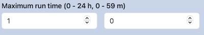
項目ごとのラベルと一行の長いラベルを記述することもできます。配列形式の最初の要素に長いラベルを、2つ目の要素を配列形式で記述ください。
form:
time:
widget: number
label: [ Maximum run time, [0 - 24 h, 0 - 59 m] ]
size: 2
value: [ 1, 0 ]
min: [ 0, 0 ]
max: [ 24, 59 ]
step: [ 1, 1 ]
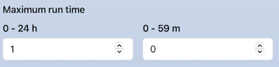
2.2. textウィジット
テキストの入力欄を表示します。
form:
comment:
widget: text
label: Comment
value: test
script: |
#SBATCH --comment=#{comment}

複数のテキストの入力欄を1行で表示することも可能です。
form:
option:
widget: text
label: [ option, argument ]
value: [ --comment=, test ]
size: 2
script: |
#SBATCH #{option_1}#{option_2}

2.3. emailウィジット
Emailの入力欄を表示します。textウィジットとほぼ同じですが、「Submit」ボタンをクリックする際にメールアドレスの形式がチェックされます。
form:
email:
widget: email
label: Email
script: |
#SBATCH --mail-user=#{email}
2.4. selectウィジット
セレクトボックスを表示します。optionsに選択肢を配列形式で記述します。配列の1つ目の要素はセレクトボックスの項目名です。scriptセクションの#{partition}はoptionsの2つ目の要素に置き換えられます。
form:
partition:
widget: select
label: Partition
value: Large Queue
options:
- [ Small Queue, small ]
- [ Large Queue, large ]
script: |
#SBATCH --partition=#{partition}

optionsの2つ目の要素は配列で記述することも可能です。下記の例では、scriptセクションの#{package_1}と#{package_2}は、配列の第1要素と第2要素に置き換えられます。後述のmulti_selectウィジット、radioウィジット、checkboxウィジットも同様です。
form:
package:
widget: select
label: Select package
options:
- [ A, [packageA, a.out] ]
- [ B, [packageB, b.out] ]
script: |
module load #{package_1}
mpiexec #{package_2}

2.5. multi_selectウィジット
複数の項目を選択できる入力欄を表示します。optionsに選択肢を配列形式で記述します。
form:
load_modules:
widget: multi_select
label: Add modules
value: mpi/mpich-x86_64
options:
- [ mpi/mpich-x86_64, mpi/mpich-x86_64 ]
- [ mpi/openmpi-x86_64, mpi/openmpi-x86_64 ]
- [ nvhpc/24.3, nvhpc/24.3 ]
- [ nvhpc/24.5, nvhpc/24.5 ]
- [ nvhpc/24.7, nvhpc/24.7 ]
script: |
module load #{load_modules}
例えばmpi/mpich-x86_64とnvhpc/24.7を選択した場合は、ジョブスクリプトは下記のように複数行で表示されます。

1行で表示したい場合は、separatorで区切り文字を設定します。
form:
load_modules:
widget: multi_select
label: Add modules
value: mpi/mpich-x86_64
separator: " "
options:
- [ mpi/mpich-x86_64, mpi/mpich-x86_64 ]
- [ mpi/openmpi-x86_64, mpi/openmpi-x86_64 ]
- [ nvhpc/24.3, nvhpc/24.3 ]
- [ nvhpc/24.5, nvhpc/24.5 ]
- [ nvhpc/24.7, nvhpc/24.7 ]
script: |
module load #{load_modules}

valueに複数の初期値を設定する場合は、配列形式で記述します。
form:
load_modules:
widget: multi_select
label: Add modules
value: [mpi/mpich-x86_64, nvhpc/24.7 ]
options:
- [ mpi/mpich-x86_64, mpi/mpich-x86_64 ]
- [ mpi/openmpi-x86_64, mpi/openmpi-x86_64 ]
- [ nvhpc/24.3, nvhpc/24.3 ]
- [ nvhpc/24.5, nvhpc/24.5 ]
- [ nvhpc/24.7, nvhpc/24.7 ]
2.6. radioウィジット
ラジオボタンを表示します。selectウィジットとほぼ同じですが、direction: horizontalが設定可能です。direction: horizontalを設定すると水平方向にラジオボタンを表示できます。direction: horizontalがない場合は、垂直方向にラジオボタンを表示します。
form:
jupyter:
widget: radio
label: Jupyter
direction: horizontal
value: Jupyter Lab
options:
- [ Jupyter Lab, jupyterlab ]
- [ Jupyter Notebook, jupyter ]
script: |
module load #{jupyter}
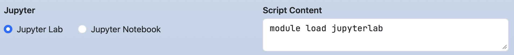
form:
jupyter:
widget: radio
label: Jupyter
value: Jupyter Lab
options:
- [ Jupyter Lab, jupyterlab ]
- [ Jupyter Notebook, jupyter ]
script: |
module load #{jupyter}
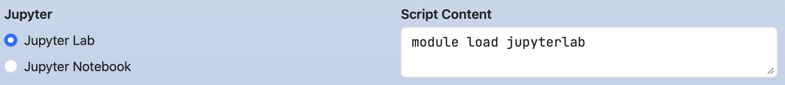
2.7. checkboxウィジット
チェックボックスを表示します。次のようにrequiredを配列形式で設定した場合、チェックボックスの各項目が必須かどうかを設定します。
form:
mail_option:
label: Mail option
widget: checkbox
direction: horizontal
value: [ Fail of job, When the job is requeued ]
required: [ true, false, true, false, false ]
options:
- [ Beginning of job execution, BEGIN ]
- [ End of job execution, END ]
- [ Fail of job, FAIL ]
- [ When the job is requeued, REQUEUE ]
- [ All, ALL ]
script: |
#SBATCH --mail-type=#{mail_option}
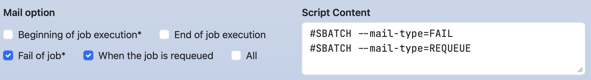
次のようにrequiredが配列形式でない場合かつ値がtrueの場合、そのチェックボックスで1つ以上の項目がチェックがされていないとジョブの投入を行うことができない、という設定になります。
form:
mail_option:
label: Mail option
widget: checkbox
direction: horizontal
value: [ Fail of job, When the job is requeued ]
required: true
options:
- [ Beginning of job execution, BEGIN ]
- [ End of job execution, END ]
- [ Fail of job, FAIL ]
- [ When the job is requeued, REQUEUE ]
- [ All, ALL ]
script: |
#SBATCH --mail-type=#{mail_option}
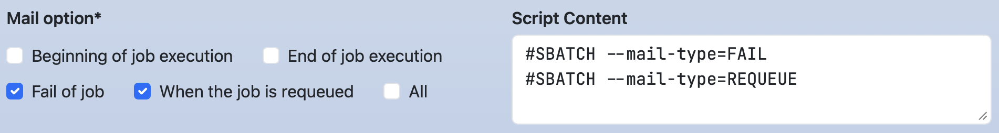
multi_selectウィジットと同様にseparatorの設定を行うことや、radioウィジットと同様にdirectionの設定を行うことができます。
2.8. pathウィジット
Open Composerが動作しているサーバ上のファイルやディレクトリのパスを選択できる入力欄を表示します。show_filesはファイルを表示するかどうかのフラグであり、デフォルトはtrueです。favoritesはショートカットパスを設定できます。
form:
working_dir:
widget: path
label: Working Directory
show_files: false
favorites:
- /lvs0/rccs-aot
script: |
cd #{working_dir}
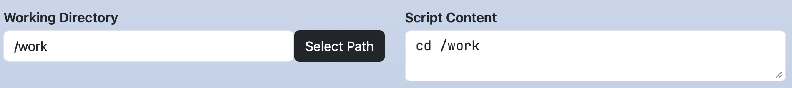
textウィジットのように任意の文字列を入力することができます。また、「Select Path」ボタンをクリックすると、下記のようなモーダルを利用してファイルやディレクトリを選択できます。

2.9. 関数
scriptセクションとheaderセクションで利用できる関数を紹介します。
関数zeropadding(key, digit)は数値に対してゼロパディングを行います。第2引数digitに指定した桁数に満たない場合、不足分を「0」で埋めます。
form:
time:
widget: number
label: [ Maximum run time (0 - 24 h), Maximum run time (0 - 59 m) ]
size: 2
value: [ 1, 5 ]
min: [ 0, 0 ]
max: [ 24, 59 ]
step: [ 1, 1 ]
script: |
#SBATCH --time=#{time_1}:#{zeropadding(time_2, 2)}:00

関数calc(expr[, decimalPlaces, roundingMode])は、式exprを計算して結果を返します。第2引数decimalPlacesには、小数点以下の桁数を指定します。省略した場合は0になります。第3引数roundingModeには、丸め方式を指定します。OC_ROUNDING_ROUND（四捨五入）、OC_ROUNDING_FLOOR（切り捨て）、OC_ROUNDING_CEIL（切り上げ）のいずれかを指定できます。省略した場合はOC_ROUNDING_ROUNDになります。
form:
time:
widget: number
label: [ Maximum run time (0 - 24 h), Maximum run time (0 - 59 m) ]
size: 2
value: [ 1, 10 ]
min: [ 0, 0 ]
max: [ 24, 59 ]
step: [ 1, 1 ]
script: |
#{calc(time_1 + time_2 / 60)}
#{calc(time_1 + time_2 / 60, 2)}
#{calc(time_1 + time_2 / 60, 2, OC_ROUNDING_FLOOR)}

関数dirname(FILE_PATH)と関数basename(FILE_PATH)はディレクトリ名とファイル名を含むパス名から、dirname()はディレクトリ部分を、basename()はファイル部分だけを返します。
form:
input_file:
widget: path
label: Input file
value: /home/test/foo.txt
script: |
cd #{dirname(input_file)}
mpiexec ./#{basename(input_file)}
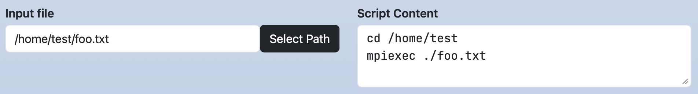
3. Dynamic Form Widget
ウィジットの設定を動的に変更できます。select、radio、checkboxウィジットのoptionで設定します。
3.1. ウィジットの設定
min、max、step、label、value、required、helpの各キーの設定を行います。optionsの各配列の第3要素以降にset-(min|max|step|label|value|required|help)-(KEY)[_(num|1st element in options)]:(VALUE)を指定します。
次の例では、node_typeでMediumを選択すると、coresのラベルと最大値はNumber of Cores (1-8)と8になります。
form:
node_type:
widget: select
label: Node Type
options:
- [ Small, small ]
- [ Medium, medium, set-label-cores: Number of Cores (1-8), set-max-cores: 8 ]
- [ Large, large, set-label-cores: Number of Cores (1-16), set-max-cores: 16 ]
cores:
widget: number
label: Number of Cores (1-4)
value: 1
min: 1
max: 4
step: 1
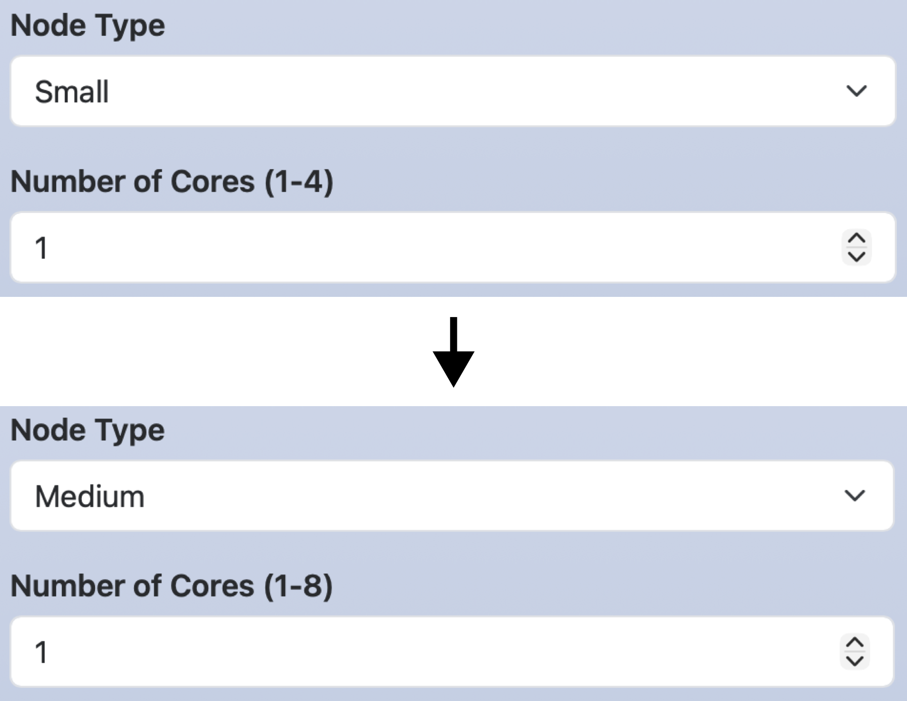
number、text、emailウィジットにおいて複数の入力欄を作っていた場合、設定対象の入力欄の指定に_(num)を用います。次の例では、node_typeでGPUを選択すると、timeの1つ目の入力欄のラベルと最大値がMaximum run time hours (0 - 24)と24になります。
form:
node_type:
widget: select
label: Node Type
options:
- [ 'Standard', '' ]
- [ 'GPU', '', set-label-time_1: Maximum run time (0 - 24h), set-max-time_1: 24 ]
time:
widget: number
label: [ Maximum run time (0 - 72 h), Maximum run time (0 - 59 m) ]
size: 2
value: [ 1, 0 ]
max: [ 72, 59 ]
min: [ 0, 0 ]
step: [ 1, 1 ]

select、radio、checkboxウィジットの場合、設定対象のオプションの指定に1st element in optionsを用います。次の例では、node_typeでGPUを選択すると、enable_gpuのEnable GPUがチェックされます。
form:
node_type:
widget: select
label: Node Type
options:
- [ 'Standard', '' ]
- [ 'GPU', '', set-value-enable_gpu: Enable GPU ]
enable_gpu:
widget: checkbox
options:
- [ Enable GPU, gpu ]
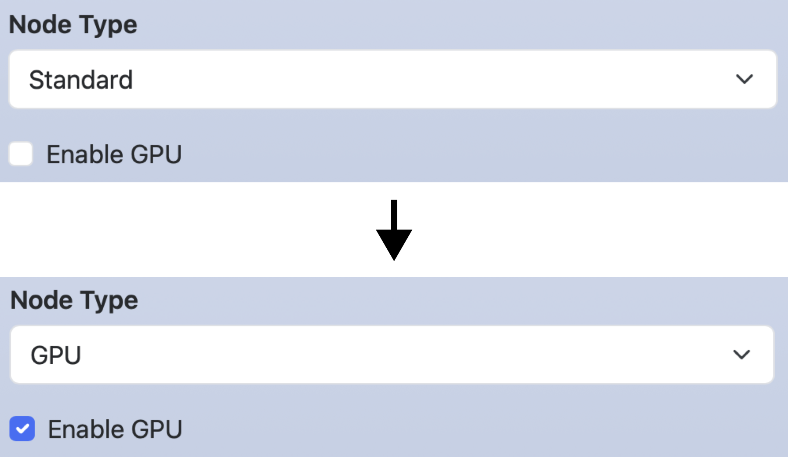
3.2. ウィジットの無効化
ウィジットとオプションを無効化・有効化します。optionsの各配列の第3要素以降に[disable|enable]-(KEY)[-(1st element in options)][_num]を指定します。
次の例ではclusterでFugakuを選択すると、node_typeのGPUのオプションとcuda_verのウィジットが無効化されます。キーを無効化された場合は、そのキーを利用しているscriptセクション中の行も削除されます。
form:
cluster:
widget: select
label: Cluster system
options:
- [ Fugaku, fugaku, disable-node_type-GPU, disable-cuda_ver ]
- [ Tsubame, tsubame ]
node_type:
widget: select
label: Node type
options:
- [ Standard, standard ]
- [ GPU, gpu ]
cuda_ver:
widget: number
label: CUDA version
value: 12
min: 12
max: 14
script: |
module load system/#{node_type}
module load cuda/#{cuda_ver}

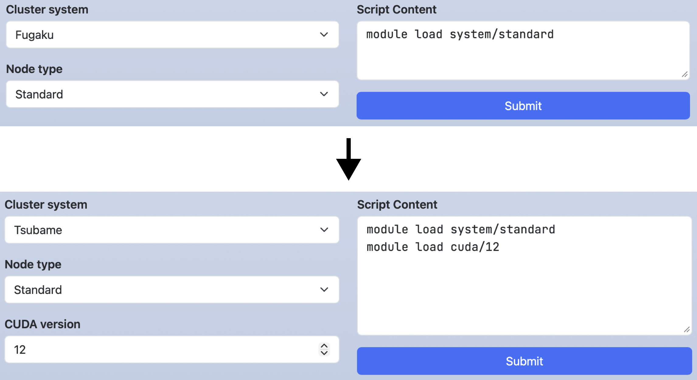
上の例のoptionsは下記のように記述することもできます。この場合、Tsubameを選択したときのみ、node_typeとcuda_verが有効になります。
options: - [ Fugaku, fugaku ] - [ Tsubame, tsubame, enable-node_type-GPU, enable-cuda_ver ]
3.3. ウィジットの非表示化
ウィジットを非表示・表示します。optionsの各配列の第3要素以降に[hide|show]-(KEY)を指定します。
次の例では、hide_advanced_optionsをチェックするとcommentが非表示になります。無効化とは異なり、そのキーのウィジットが表示されないだけであり、そのキーを利用しているscriptセクションの行には影響しません。indentはWebフォームの左側にインデントを作成します。数値は1〜5が入力でき、数値が大きくなるほどインデント幅は大きくなります。
form:
hide_advanced_option:
widget: checkbox
options:
- [ 'Hide advanced option', '', hide-comment ]
comment:
widget: text
label: Comment
value: test
indent: 1
script: |
#SBATCH --comment=#{comment}
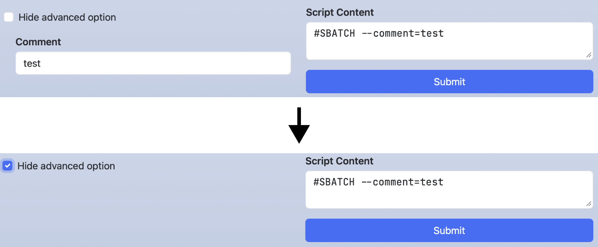
次の例では、show_advanced_optionsをチェックするとcommentが表示されます。
form:
show_advanced_options:
widget: checkbox
options:
- [ 'Show advanced option', '', show-comment ]
comment:
widget: text
label: Comment
value: test
indent: 1
script: |
#SBATCH --comment=#{comment}

4. 利用可能な組合せ
formセクションとheaderセクションにおいて、各ウィジットと利用可能なオプションとの組合せは下記の表の通りです。optionsのみは必須項目ですが、他の項目は省略可能です。
| Widget | label, value, help, required, indent | options (Dynamic Form Widget) | size | separator | direction | min, max, step |
show_files, favorites |
|---|---|---|---|---|---|---|---|
| number | OK | OK | OK | ||||
| text, email | OK | OK | |||||
| select | OK | OK (OK) | |||||
| multi_select | OK | OK | OK | ||||
| radio | OK | OK (OK) | OK | ||||
| checkbox | OK | OK (OK) | OK | OK | |||
| path | OK | OK |
5. scriptセクション
5.1. ラベルの変更
ジョブスクリプトのラベル（デフォルトは「Script Content」）を変更したい場合はscriptセクションでlabelを設定します。その場合、ジョブスクリプトはcontentに記述します。
form:
nodes:
widget: number
label: Number of nodes
script:
label: Script Details
content: |
#SBATCH --nodes=#{nodes}

5.2. ファイルの保存
Open Composerはジョブスクリプトの生成だけでなく、アプリケーションで利用するパラメータファイルや設定ファイルの生成も行うことができます。そのような場合、ジョブスクリプトを投入せずに、ジョブスクリプトの保存のみを行う方が適しています。ジョブスクリプトの保存のみを行いたい場合、scriptセクションでaction: saveを設定します。
form:
nodes:
widget: number
label: Number of nodes
script:
label: Parameter file
action: save
content: |
num_of_nodes: #{nodes}
この設定を行うと、ボタンのラベルが「Submit」から「Save」に変化します。
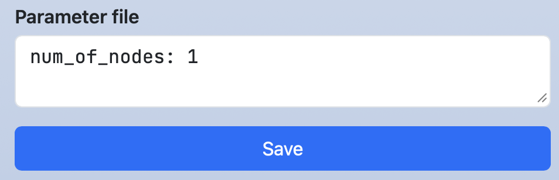ボタンをクリックすると保存が実行され、画面上部にその保存先が表示されます。その文字のリンクをクリックすると、Open OnDemandのHome Directoryが起動します。また、ターミナルのアイコンがある場合、そのアイコンをクリックするとOpen OnDemandのTerminalアプリケーションが起動します。

5.3. 非表示化
scriptセクションを非表示化することができます。特殊な変数OC_SCRIPT_CONTENTとDynamic Form Widgetのhide-とを下記のように組み合せて利用します（ERBを用いるため、ファイル名はform.yml.erbであることに注意ください）。
form:
script_content:
widget: checkbox
value: "Hide script content"
options:
- [ "Hide script content", "", hide-<%= OC_SCRIPT_CONTENT %> ]
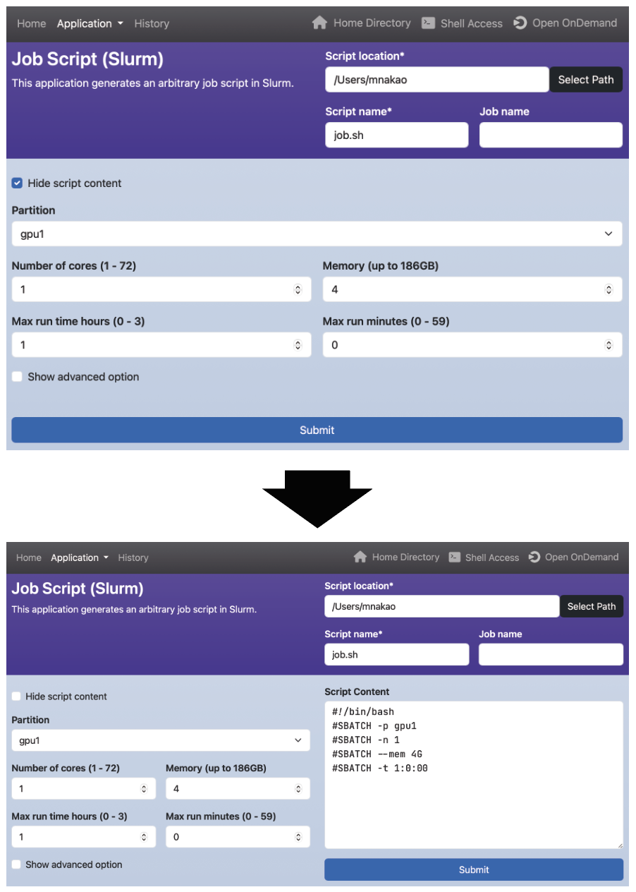
チェックボックスを表示させずに、ジョブスクリプトを隠したい場合は、そのチェックボックスに対してhide-を設定します。
form:
script_content:
widget: checkbox
value: "Hide script content"
options:
- [ "Hide script content", "", hide-<%= OC_SCRIPT_CONTENT %>, hide-script_content ]
5.4. 特殊な変数
scriptセクションでは、下記の特殊な変数も利用できます。
- #{OC_APP_NAME}:
manifest.ymlのnameで定義しているアプリケーション名 - #{OC_DIR_NAME}:
manifest.ymlなどのファイルが保存されているディレクトリ名（各アプリケーションのURLの最後のパス要素） - #{OC_SCRIPT_LOCATION}: ヘッダで定義されている
Script location - #{OC_CLUSTER_NAME}: ヘッダで定義されている
Cluster name（./conf.yml.erbでclusterが定義されている場合に有効） - #{OC_SCRIPT_NAME}: ヘッダで定義されている
Script Name - #{OC_JOB_NAME}: ヘッダで定義されている
Job Name
6. checkセクション
checkセクションでは、ウィジットに設定された値のチェックをRuby言語を用いて定義します。このチェックはジョブの投入前に行われます。checkセクションでは、関数oc_assert(condition, message)を利用できます。この関数はconditionがfalseの場合、messageを出力して処理を終了します。
checkセクションのサンプルは下記の通りです。formセクションの変数を参照する場合は、@マークの後に変数名を記述してください。下記のサンプルでは、24時間よりも大きな値が入力された状態で「Submit」ボタンをクリックすると、エラーメッセージが出力され、ジョブスクリプトの投入は行わないことを意味しています。
form:
time:
widget: number
label: [ Maximum run time (0 - 24 h), Maximum run time (0 - 59 m) ]
size: 2
value: [ 1, 0 ]
min: [ 0, 0 ]
max: [ 24, 59 ]
step: [ 1, 1 ]
script: |
#SBATCH --time=#{time_1}:#{time_2}:00
check: |
message = "Exceeded Time"
oc_assert(@time_1 != 24 || @time_2 == 0, message)
checkセクションでは、scriptセクションと同様に下記の特殊な変数も利用できます。
- @OC_APP_NAME:
manifest.ymlのnameで定義しているアプリケーション名 - @OC_DIR_NAME:
manifest.ymlなどのファイルが保存されているディレクトリ名（各アプリケーションのURLの最後のパス要素） - @OC_SCRIPT_LOCATION: ヘッダで定義されている
Script location - @OC_CLUSTER_NAME: ヘッダで定義されている
Cluster name（./conf.yml.erbでclusterが定義されている場合に有効） - @OC_SCRIPT_NAME: ヘッダで定義されている
Script Name - @OC_JOB_NAME: ヘッダで定義されている
Job Name
7. submitセクション
sectionセクションでは、ジョブ投入前（checkセクションによるチェックの後）に実行する処理をbash言語を用いて定義します。
submitセクションのサンプルは下記の通りです。scriptセクションと同様の記法が可能です。さらに、submitセクションだけで利用できる特殊な変数OC_SUBMIT_OPTIONSがあり、ジョブスクリプト投入コマンドに追加のオプションを設定できます。この処理の実行後に、ジョブスクリプトを投入するためのコマンド（例えば、sbatch #{OC_SUBMIT_OPTIONS} -J #{OC_JOB_NAME} #{OC_SCRIPT_NAME}）が実行されます。
form:
nodes:
widget: number
label: Number of nodes
submit: |
#!/bin/bash
set -e
cd #{OC_SCRIPT_LOCATION}
mv #{OC_SCRIPT_NAME} param_#{nodes}.conf
genjs_ct param_#{nodes}.conf > #{OC_SCRIPT_NAME}
OC_SUBMIT_OPTIONS="-n 1 --export=NONE"
submitセクションの内容をジョブ投入前に閲覧したい場合、action: confirmを記述します。その場合、処理の内容はcontentに記述します。
form:
nodes:
widget: number
label: Number of nodes
submit:
action: confirm
content: |
#!/bin/bash
set -e
cd #{OC_SCRIPT_LOCATION}
mv #{OC_SCRIPT_NAME} param_#{nodes}.conf
genjs_ct param_#{nodes}.conf > #{OC_SCRIPT_NAME}
OC_SUBMIT_OPTIONS="-n 1 --export=NONE"
この設定を行うと、ボタンのラベルが「Submit」から「Confirm」に変化します。「Confirm」ボタンをクリックすると、変数に値が代入されたsubmitセクションの内容が表示されます。その内容は編集することも可能です。「Submit」ボタンをクリックすると、submitセクションの内容の実行後にジョブが投入されます。注意点として、スクリプト中でエラーが発生したときに、処理を中断するにはset -eコマンドが必要です。
なお、scriptセクションでaction: saveも設定した場合、scriptセクションの内容を保存した後、submitセクションの内容を実行するという動作になります。「Confirm」の画面下のボタンは下記のように「Submit」から「Save」という表示になります。

8. headerセクション
headerセクションを定義できます。ただし、lib/header.yml.erbで定義されているウィジットは必ず定義してください。
下記の例は、ジョブスクリプトを隠す新しいウィジットscript_contentを定義しています。_script_locationと_scriptはlib/header.yml.erbで定義されているウィジットです（./conf.yml.erbでclusterが定義されている場合は、_cluster_nameの定義も必要です）。
header:
_script_location:
widget: path
value: <%= Dir.home %>
label: Script Location
show_files: false
required: true
_script:
widget: text
size : 2
label: [ Script Name, Job Name ]
value: [ job.sh, "" ]
required: [ true, false ]
script_content:
widget: checkbox
value: "Hide script content"
options:
- [ "Hide script content", "", hide-<%= OC_SCRIPT_CONTENT %> ]
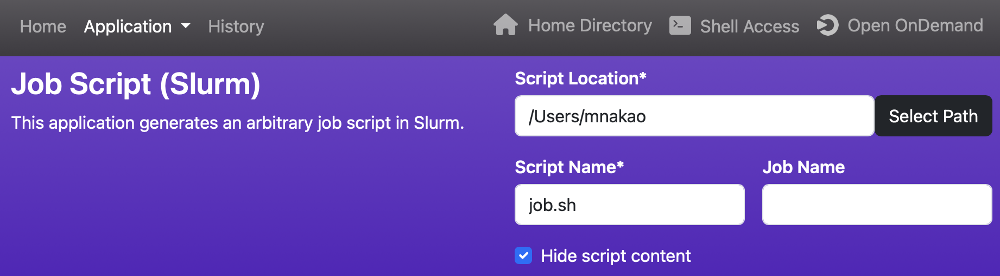
なお、上の例はアプリケーション毎にヘッダを設定する場合ですが、すべてのアプリケーションのヘッダを設定したい場合はlib/header.yml.erbを直接編集します。その場合、scriptセクションと同様に下記の特殊な変数も利用できます（headerやformセクションでも利用可能ですが、ファイル名はform.yml.erbである必要があります）。
- @OC_APP_NAME:
manifest.ymlのnameで定義しているアプリケーション名 - @OC_DIR_NAME:
manifest.ymlなどのファイルが保存されているディレクトリ名（各アプリケーションのURLの最後のパス要素）
下記に特定のアプリケーションだけ処理を変更する例を示します。
<% if @OC_DIR_NAME == "Slurm" %>
queue:
widget: select
label: Queue
options:
- [small]
- [large]
<% end %>
9. サンプル
アプリケーションのサンプルは下記の通りです。
- https://github.com/RIKEN-RCCS/OpenComposer/tree/main/sample_apps
- https://github.com/RIKEN-RCCS/composer_fugaku
- https://github.com/RIKEN-RCCS/composer_rccs_cloud
10. 補足
- 本ページのサンプルはすべてbash言語で記述されていますが、他のシェルも利用することができます。ただし、
submitセクションだけはbash言語しか記述できません。 - ウィジット名に利用できるのは英数字とアンダースコアのみです。数字とアンダースコアを先頭に用いることもできません。末尾がアンダースコア+数字のウィジット名（例：
nodes_1）も利用しないで下さい。アプリケーションを保存するディレクトリ名も同様です。ただし、headerセクションをform.ymlで定義する場合、lib/header.yml.erbで用いられているアンダースコアで始まるウィジット名（例：_script_location）は利用可能です。 optionsで2つ目の要素がない場合、1つ目の要素が代わりに用いられます。scriptセクションにおいて、ある行で利用されている変数が値を持たない場合、その行は表示されません。ただし、その変数の先頭にコロンを付加する（例：#{:nodes}や#{basename(:input_file)}）と、その変数が値を持たなくても行は出力されます。- Open Composerがジョブスクリプトを投入するまでに行われる処理の順番は下記の通りです。
- アプリケーションページで「Submit」ボタンがクリックされる
form.ymlのcheckセクションに記述されたスクリプトを実行（checkセクションがある場合）form.ymlのsubmitセクションに記述されたスクリプトを実行（submitセクションがある場合）- ジョブスクリプトが投入される
- 一般ユーザ権限でOpen Composerの開発を行う場合、Open Composerを開発モードに設定すると便利です。エラーが発生した場合、Webブラウザのその原因が表示されます。
./run.rbを下記のように編集してください。#set :environment, :production set :environment, :development